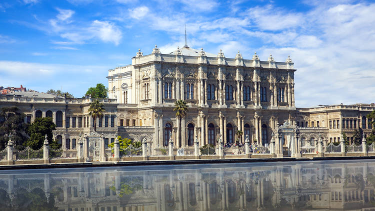

Beşiktaş
1-Beşiktaş Meydanı
Beşiktaş Meydanı, halk arasındaki adıyla Çarşı veya Köyiçi, İstanbul'un Beşiktaş ilçesinde bulunan bir meydandır. Meydan, genel olarak Barbaros Bulvarı ve Beşiktaş Caddesi çevresine konuşlanmıştır. Meydanda Kadıköy ve Üsküdar'a giden vapurların kalktığı Beşiktaş İskelesi ve İstanbul'un çeşitli yerlerine giden İETT otobüslerinin peronu bulunur.İstanbul Deniz Müzesi, Beşiktaş Kültür Merkezi ve Büyük Beşiktaş Çarşısı gibi önemli mekanlar bu meydanda yer alır.Meydan, Sinan Paşa Camii, Barbaros Anıtı ve Barbaros Hayreddin Paşa Türbesi'nin içinde bulunmasıyla bir açık hava müzesi kimliği kazanmaktadır.
2-Büyük Beşiktaş Çarşısı
Büyük Beşiktaş Çarşısı, İstanbul'un Beşiktaş ilçesinde bulunan 1985 yılında tarihi Sinan Paşa Camii'nin arka tarafında 229 m² alana kurulmuştur. Büyük Beşiktaş Çarşısı'nın alt katında PTT olması nedeni ile halk arasında "Postane Çarşısı" olarak da bilinmektedir. Çarşının mimari yapısı, yarı açık çarşı olması, en üst katında müşteri ve misafir otoparkının bulunması, Büyük Beşiktaş Çarşısı'nı farklı kılan özelliklerinden sadece bazılarıdır.
3-Beşiktaş İskelesi
Beşiktaş İskelesi, İstanbul'un Beşiktaş ilçesinde bulunan bir iskeledir. İskele, Beşiktaş'ın doğusunda yer almaktadır. Şehir Hatları tarafından işletilen iskeleden Adalar, Kadıköy, Üsküdar, Küçüksu ve Rumelikavağı'na giden seferler düzenlenir.
4-Deniz Müzesi
İstanbul Deniz Müzesi, 1897 yılında, Sultan II. Abdülhamit’in izni ve Bahriye Nazırı Bozcaadalı Hasan Hüsnü Paşa’nın emirleriyle “Müze ve Kütüphane İdaresi” adı altında Tersane-i Amire’de bulunmakta olan küçük bir binada ilk kez kurulmuştur. Dönemin koşulları gereğince farklı zamanlarda değişik binalarda ziyaretçilerine hizmet vermiş olan müze, en son 1961 yılında Beşiktaş semtindeki, daha önce maliye bakanlığı binası olarak hizmet veren, İskele Meydanı’nda Barbaros Hayrettin Paşa’nın anıtının ve türbesinin de olduğu, bugünkü yerine taşınmış ve “Deniz Müzesi ve Arşivi Müdürlüğü” adıyla tekrar hizmete girmiştir.
5-Dolmabahçe Sarayı
Dolmabahçe Sarayı, İstanbul, Beşiktaş'ta, Kabataş'tan Beşiktaş'a uzanan Dolmabahçe Caddesi'yle İstanbul Boğazı arasında, 250.000 m²lik bir alan üzerinde bulunan Osmanlı sarayı. Marmara Denizi'nden Boğaziçi'ne deniz yoluyla girişte sol kıyıda, Üsküdar ve Kuzguncuk'un karşısında yer alır. Sultan Abdülmecid tarafından inşa ettirilen sarayın yapımı 1843 yılında başlayıp 1856 yılında bitirilmiştir. Günümüzde müze olarak kullanılmaktadır.
6-Yıldız Sarayı
Yıldız Sarayı, ülkemizin göz alıcı güzelliği ile büyüleyen tarihi şehri İstanbul'dadır. İstanbul'da yer alan Yıldız Sarayı, şehrin en güzel ve canlı ilçelerinden birisi olan Beşiktaş'ın sınırları içerisindedir.Osmanlı Devleti'nin İstanbul'da yer alan en değer eserlerinin başında Yıldız Sarayı gelmektedir. Etkileyici ve zarif mimari yapısı ile görenleri kendisine hayran bırakan tarihi saray, Osmanlı döneminde devletin gücünü ve görkemini en iyi şekilde yansıtmaktadır
Osmanlı Devleti'nin son dönemlerindeki önemli hadiselere de şahitlik eden saray, bu yönü ile diğer idare merkezlerinden ayrı özel bir yere sahip olmuştur. Yıldız Sarayı, mimarisi ile birlikte kendine özgü bahçesi ile yerli ve yabancı turistlerin büyük bir beğenisini kazanmaktadır.
Yıldız Parkı
Yıldız Parkı (Yıldız Korusu olarak da bilinir), İstanbul'un, Beşiktaş İlçesinde yer alan tarihi park. Balmumcu'dan Ortaköy'e uzanan Palanga Caddesi kuzey ve doğu sınırını, Ortaköy'den Beşiktaş'a uzanan Çırağan Caddesi güney sınırını oluşturur. Biri Palanga Caddesi, diğeri de Çırağan Caddesi üzerinde olmak üzere iki ayrı kapısı olan Yıldız Parkı'nın içinde Malta köşkü ve Çadır Köşkü adı altında iki tane köşk vardır.

8-Çırağan Sarayı
Çırağan Sarayı, İstanbul'un Beşiktaş ilçesinde, Çırağan Caddesi üzerinde bulunan tarihi saray. Çırağan'ın bugün Beşiktaş ve Ortaköy arasında bulunan yeri 17. yüzyılda "Kazancıoğlu Bahçeleri" diye bilinirdi. 18. yüzyılda Beşiktaş kıyılarını süsleyen denize nazır saraylar ve bahçeler Lale Devri diye bilinen 'Çiçek ve Müzik Aşkı' döneminin en önemli simgelerinden sayılmıştır. Bu dönem, bir eğlence olduğu kadar bir kültür parlaklığı devriydi. Dönemin hükümdarı olan III. Ahmed buradaki mülkünü gözde Vezir-i Azam'ı İbrahim Paşa'ya hediye etmiş ve ilk yalı Nevşehirli Damat İbrahim Paşa tarafından eşi Fatma Sultan (III. Ahmed'in kızı) için inşa ettirilmiştir. Kendisi burada Çırağan Şenlikleri denilen meş'ale şenliklerini düzenletmiştir. İşte bu olaylar dolayısıyla bu alan Farsçada ışık anlamına gelen 'Çırağan' ismiyle anılmaya başlanmıştır.
9-Ihlamur Kasrı
Ihlamur Kasrı, Beşiktaş ve Nişantaşı arasındaki vadide yer alan Ihlamur Mesiresi'ndeki kasır olarak biliniyor. Burası eskiden içinden Fulya deresinin aktığı, ıhlamur ve çınar ağaçlarının gölgelediği, yeşilliklerle dolu bir mesire alanıymış. Günümüzde kasırların yer aldığı vadinin ilk bölümü Sultan III. Ahmed döneminde tersane eminlerinden Hacı Hüseyin Ağa’ya ait bağlarmış. Daha sonra devlet hazinesine katılmış ve padişaha ait bir hasbahçeye dönüştürülmüş.
Alanın Yıldız’a doğru yükselen ikinci bölümünde, Sultan III. Selim ile Sultan II. Mahmud’un kemankeşlerle birlikte atış yarışmaları yaptıkları biliniyor. Bu bilgiye günümüze ulaşan bazı nişan taşlarından ulaşılmış. Taşların üzerinde sultanların su dolu testilere yaptıkları atışların mesafeleri, dereceleri ve tarihleri de yazıyor. Sultan Abdülmecid döneminde vadinin “Muhabbet Bahçesi” denilen üçüncü bölümü ekleniyor ve ağaçlandırma çalışmaları yapılıyor. Sultan Abdülmecid 1849-1855 yıllarında bu alana iki kasır yaptırıyor. Buraya daha sonra 'ferahlık ve tazelik' gibi anlamlara gelen 'Nüzhetiye' adını veriyor.
Sultan Abdülaziz döneminde bu hasbahçede çeşitli eğlenceler ve pehlivan güreşleri düzenlenirken sonraki yıllarda ise padişah ve ailesinin gezileri için uğrak yeri olmaya devam etmiş.
10-Mecidiye Camii
Büyük Mecidiye Camii ya da halk arasında bilinen adı ile Ortaköy Camii, İstanbul Boğaziçi’nde Beşiktaş ilçesinin, Ortaköy semtinde sahilde bulunan Neo Barok tarzında bir camiidir.
Cami, Sultan Abdülmecid tarafından Ermeni asıllı Mimar Nigoğos Balyan’a 1853 yılında yaptırılmıştır. Oldukça zarif bir yapı olan cami Barok üslubundadır. Boğaziçi’nde eşsiz bir konuma yerleştirilmiştir. Bütün selatin camilerinde olduğu gibi harim ve hünkar bölümü olmak üzere iki kısımdan oluşur. Geniş ve yüksek pencereler Boğaz’ın değişken ışıklarını caminin içine taşıyacak biçimde düzenlenmiştir.
Merdivenle çıkılan yapının tek şerefeli iki minaresi vardır. Duvarları beyaz kesme taştan yapılmıştır. Tek kubbenin duvarları pembe mozaiktendir. Mihrap mozaik ve mermerden, minber ise somaki kaplı mermerden yapılmıştır ve ince bir işçiliğin ürünüdür.
Nasıl Gidilir
Metroyla
Metro: İstanbul metrosunun M2 (Yenikapı-Hacıosman) hattını kullanarak Beşiktaş'a ulaşabilirsiniz. Beşiktaş, M2 hattının Beşiktaş istasyonunda bulunur.
Otobüsle
İstanbul'un çeşitli bölgelerinden Beşiktaş'a otobüslerle ulaşabilirsiniz. Beşiktaş, İstanbul'un önemli bir otobüs merkezi olduğu için birçok otobüs hattı buradan geçmektedir.
Deniz Otobüsüyle
İstanbul Boğazı'ndan Beşiktaş'a deniz otobüsleriyle de ulaşabilirsiniz. Boğaz hattında sefer yapan deniz otobüsleri Beşiktaş İskelesi'nde durmaktadır.